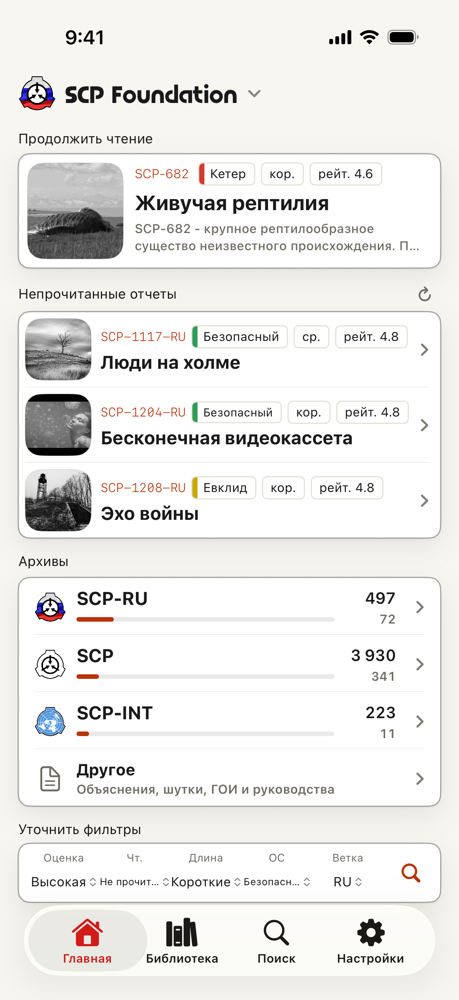
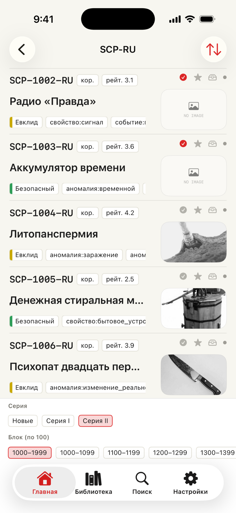
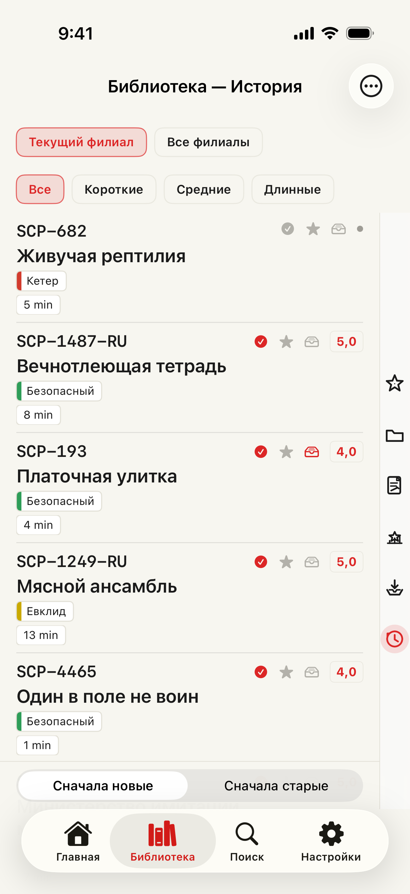
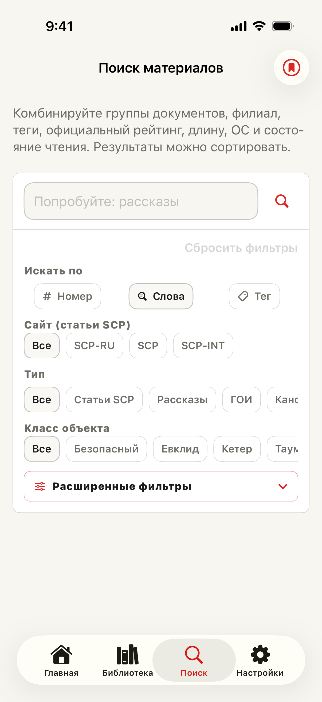

▮ ITEM #: SCP-DOCS-APP · OBJECT CLASS: READER
Secure.
Contain.
Read.
SCP Docs — неофициальная фанатская iOS-читалка статей SCP Wiki и филиалов. Она превращает публичные исходные страницы в нативное рабочее пространство архива: просматривайте каталоги филиалов, ищите по номеру или названию, сохраняйте важные файлы, организуйте их в Библиотеке и возвращайтесь к тем самым отчётам, которые читали.
- Неофициальное фан-приложение
- Бесплатно + Premium
- 13+
- Без аккаунта

Field screens
Экраны, соответствующие сценарию



Reading workspace
Читайте, ищите, организуйте, возвращайтесь
Приложение построено вокруг Главной, Библиотеки, Поиска и Настроек. Главная служит входом в архив: продолжение чтения, пресеты поиска, случайное открытие и маршруты каталога для отчётов SCP, Tales, Canons, серий Canon, Групп Интереса, руководств и связанных коллекций.
Библиотека превращает просмотр в личную полку. История, статус чтения, оценки, закладки, «прочитать позже», позиция прокрутки, заметки, папки и данные продолжения чтения остаются привязанными к открытым статьям, поэтому ваш путь по архиву виден на устройстве.
Content scope
Пять филиалов — один рабочий процесс
SCP Docs поддерживает основной английский архив SCP Foundation, а также японский, французский, русский и корейский филиалы. Смена филиала меняет Главную, поиск, списки, переходы к статьям и язык интерфейса. SCP International и переведённые архивы перечислены там, где есть данные каталога.
- Списки архива — Начинайте с каталогов филиала: статьи SCP, Tales, Canons, серии Canon, GoI, Joke SCP, SCP-EX, коллекции, недавние статьи и связанные маршруты.
- Поиск — Переходите по номеру или названию бесплатно; Premium добавляет фильтры по документам, тегам, классу объекта, заметкам, статусу чтения, официальному рейтингу, длине и сохранённым поискам.
- Библиотека — Сохраняйте статьи как закладки или «прочитать позже», оценивайте, добавляйте заметки, группируйте избранное в папки и продолжайте с сохранённой позиции прокрутки.
- Ридер — Более чистая типографика, темы, инструменты прокрутки, улучшенная тёмная тема и более точное отображение специально свёрстанных страниц.
Premium
Инструменты для глубокого чтения
- Статистика чтения
- Время чтения, покрытие каталога, часто читаемые классы объектов и теги, тренды оценок, заметки, очередь и журналы по дням, месяцам и годам.
- Сохранённые поиски
- Сохраняйте условия поиска и получайте уведомления на устройстве, когда появляются новые совпадающие записи каталога.
- Папки закладок
- Организуйте сохранённые статьи в папки, которые могут синхронизироваться через ваш iCloud Drive вместе с заметками и сохранёнными поисками.
- Слушать и сохранять
- Синтез речи читает текст статьи вслух, а офлайн-снимки сохраняют подходящие статьи доступными без соединения.
- Карточки для публикации
- Превратите статью или выбранный список в стилизованную карточку для X и других социальных приложений, с шаблонами и необязательным комментарием.
- Реклама и лимиты
- Premium скрывает рекламу, расширяет лимиты сохранения, открывает редактирование заметок и расширенный поиск. Рекламный просмотр может дать временный Premium, когда доступен.
Requirements
Требования
- OS — iOS 17 или новее.
- Сеть — нужна для обновления каталогов, онлайн-чтения, контента исходных сайтов, рекламы, проверок покупок и внешних ссылок.
- Аккаунты — для чтения в приложении не нужен аккаунт SCP Foundation или Wikidot.
Deployment
Открыть архив
SCP Docs — неофициальное фанатское приложение. Исходные статьи, сведения об авторах, уведомления об авторских правах и условия лицензий регулируются исходными сайтами. Работы SCP обычно публикуются под Creative Commons BY-SA 3.0, но каждая исходная страница является основным источником.